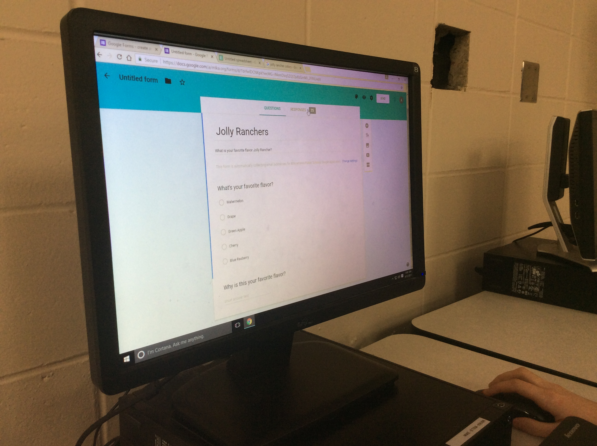

We made a survey askiing peoples favourite flavour of Jolly Rancher and why? We used the main 5 flavours which were Watermelon, Grape, Blue rasberry, Cherry, Green apple.
 We took the survey an the reslts that came back was
- 40% of the people liked Watermelon the best and in a bag of Jolly Ranchers the percentage of watermelon is 28%
- 20% liked cherry the best and in a bag of Jolly Ranchers the percentage of cherry is 18.9%
- 20% liked green apple the best and in a bag of Jolly Ranchers the percentage of Green Apple is 27.3%
- 10% liked blue rasberry the best and in a bag of Jolly Ranchers the percentage of Blue Rasberry is 18.2%
- 10% liked grape the best and in a bag of Jolly Ranchers the percentage of Grape is 7.6%